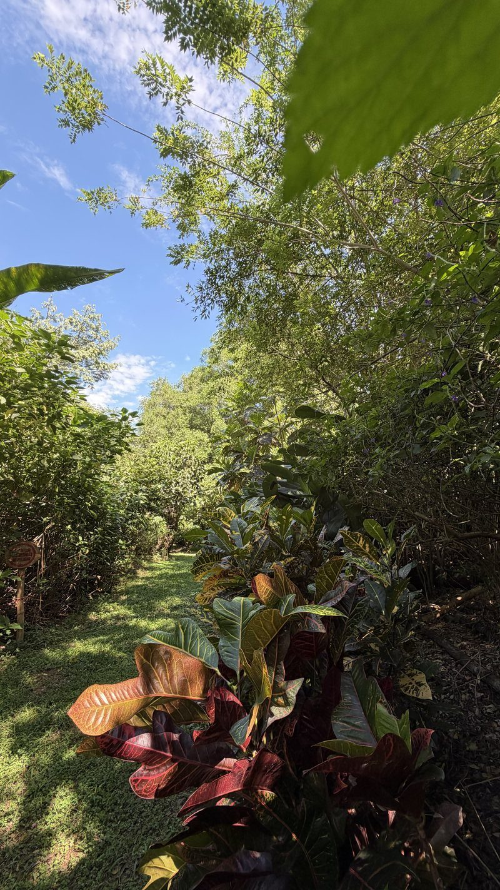

El bosque
El Sendero Ecovital
Un recorrido guiado por la quebrada Aranzoque, entre guaduas, búcaros y caracolíes.
Se anda poco, se para mucho
Planos cortos grabados aquí dentro, sin sonido. No hay nada que pulsar: se mueven solos.
— Metraje propio, Vegas del Verde
-
Una mariposa naranja se posa entre las varas moradas y sigue. -
El viento mueve las varas en flor y una parda no se suelta. -
A contraluz, una amarilla asoma por el borde del encuadre. -
Dos naranjas coinciden en la misma mata.



El recorrido guiado junto a la quebrada: la única visita que se hace suelta, sin reservar un plan completo.
Con alguien que sabe mirar
Es pajareo y observación de plantas a la vez, con guía: lo que oyes tiene nombre.
Quebrada Aranzoque Riachuelo La Florida
Las dos corrientes de agua rodean el terreno arbolado.
Guaduas a lado y lado · Búcaro y Caracolí · Recorrido guiado de pajareo
Escribe con cuántos vienen y qué día les sirve. Cómo llegar.